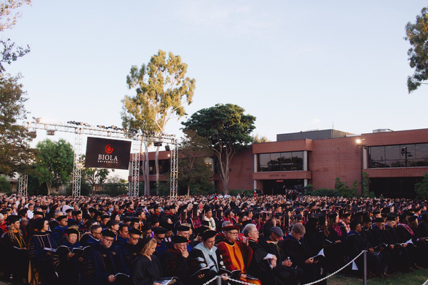
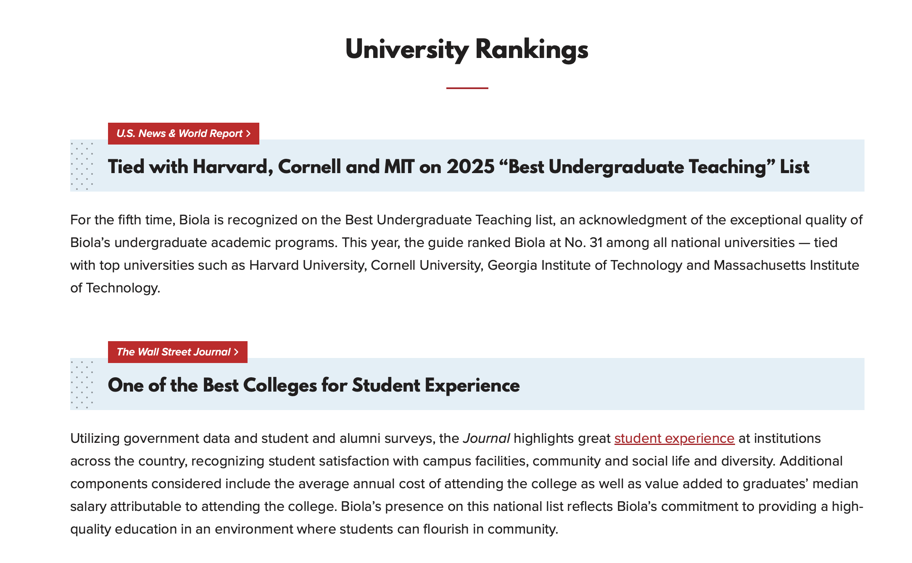

원하시는 학위 과정을 선택하여 요강을 확인하세요.
HAVE SOME QUESTIONS?
매주 수요일 밤 8시
ZOOM 설명회
시공간을 초월한 학위 과정
탈봇의 탁월한 글로벌 수준의 신학 교육을 100% 한국어로 제공합니다.
사역의 현장을 떠나지 않고도 미국 본교와 동일한 커리큘럼을 이수할 수 있도록 최적화된 온라인 학습 환경과 체계적인 학생 관리 시스템을 지원합니다.
독보적인 영성 훈련
탈봇은 단순한 학문적 지식 전달을 넘어, '영성 형성(Spiritual Formation)'에 깊은 비중을 둡니다. 사역자로서의 내면과 인격이 그리스도를 닮아가도록 돕는 통합적 훈련을 제공합니다.
자세히 보기 ↗글로벌 사역 네트워크
바이올라 대학교와 탈봇신학대학원이 배출한 전 세계 1만 명 이상의 동문 네트워크와 연결됩니다. 졸업 후에도 국내외 각지에서 활동하는 동역자들과 교류하며 지속적인 사역의 시너지를 창출할 수 있습니다.

하버드, 코넬, MIT와 공동 순위
바이올라대학교는 뛰어난 학부 교육의 우수성을 인정받아 다섯 번째로 Best Undergraduate Teaching 순위에 선정되었습니다. 2025년 평가에서 바이올라대학교는 미국 전국 종합대학 부문 31위에 올랐으며, 하버드대학교, 코넬대학교, 조지아공과대학교, 매사추세츠공과대학교와 공동 순위를 기록했습니다.
자세히 보기 ↗